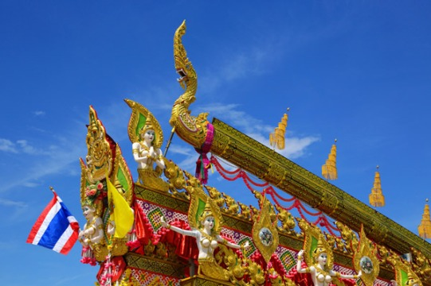
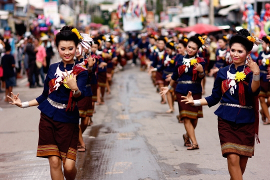
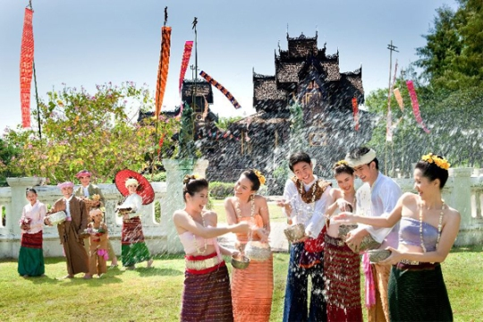
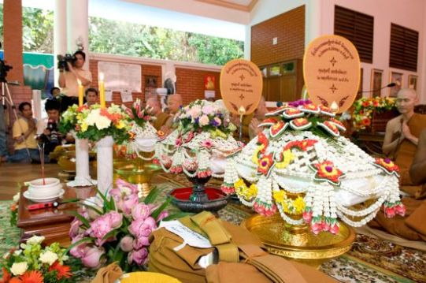
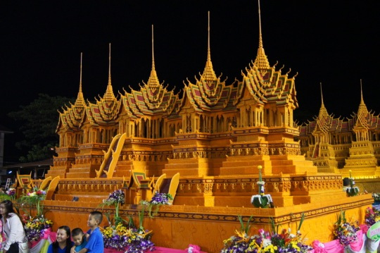
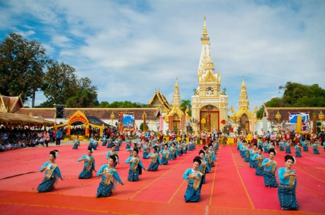
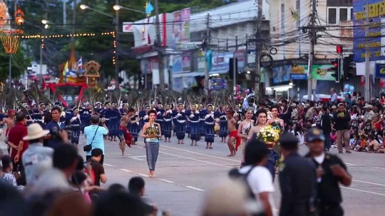
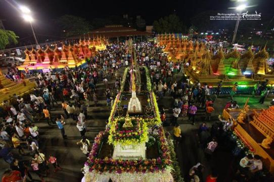

| ประเพณีบุญบั้งไฟ
|
|---|
เป็นประเพณีที่ชาวอีสานจัดขึ้นในเดือน 6 เรียกกันว่า “บุญเดือนหก” มีจุดมุ่งหมายเพื่อ เป็นงานรื่นเริงครั้งใหญ่ก่อนการเริ่มทำนา และเป็นการสร้างกำลังใจว่าการทำนาในปีนั้นจะได้ผลดี โดยมี ความเชื่อว่าเทวดาคือ “พระยาแถน” สามารถบัลดาลให้พืชผลในท้องนาอุดมสมบูรณ์ หากบูชาเซ่นสรวงให้ พระยาแถนพอใจก็จะช่วยให้ฝนตกตามฤดูกาล การทำนาได้ผลธัญญาหารบริบูรณ์ โดยเฉพาะถ้าหมู่บ้านใคร ทำบุญบั้งไฟติดต่อกันทุก 3 ปี
|
|  |
ประเพณีบุญบั้งไฟตามตำนานเล่าว่า เมื่อครั้งพระพุทธเจ้าถือชาติกำเนิดเป็นพญาคางคกได้อาศัยอยู่ใต้ ร่มโพธิ์ใหญ่ในเมืองพันทุมวดี ด้วยเหตุใดไม่แจ้ง พญาแถนเทพเจ้าแห่งฝนโกรธเคืองโลกมนุษย์มากจึง แกล้งไม่ให้ฝนตกนานถึง 7 เดือน ทำให้เกิดความลำบากยากแค้นอย่างแสนสาหัสแก่มวลมนุษย์ สัตว์และ พืช จนกระทั่งพากันล้มตายเป็นจำนวนมากพวกที่แข็งแรงก็รอดตายและได้พากันมารวมกลุ่มใต้ต้นโพธิ์ใหญ่ กับพญาคางคก สรรพสัตว์ทั้งหลายจึงได้หารือกันเพื่อจะหาวิธีการปราบพญาแถนที่ประชุมได้ตกลงกันให้ พญานาคยกทัพไปรบกับพญาแถน แต่ก็ต้องพ่ายแพ้จากนั้นจึงให้พญาต่อแตนยกทัพไปปราบแต่ก็ต้องพ่าย แพ้อีกเช่นกัน ทำให้พวกสรรพสัตว์ทั้งหลายเกิดความท้อถอย หมดกำลังใจและสิ้นหวัง ได้แต่รอวันตาย |
|  |
| ประเพณีบุญผะเหวด จังหวัดร้อยเอ็ด |
|---|
“ประเพณีบุญผะเหวด หรืองานบุญเดือนสี่ ภาพจำลองเรื่องราวมหาชาติชาดก ครั้งที่พระเวสสันดรกลับเข้าเมือง ที่ยิ่งใหญ่ตระการตา ของขบวนแห่ทั้ง ๑๓ กัณฑ์ ฟังเทศน์มหาชาติ แห่กัณฑ์จอบ กัณฑ์หลอน แห่ข้าวพันก้อน เทศน์สังกาด บุญใหญ่ที่สร้างความสุขสนุกสนานแก่พุทธศาสนิกชนโดยทั่วกัน”
จังหวัดร้อยเอ็ด ได้เริ่มฟื้นฟูงานประเพณีบุญผะเหวด ขึ้นมาในปี พ.ศ.๒๕๓๔ ซึ่งได้มีการกำหนดจัดงานในวันเสาร์และวันอาทิตย์แรกของเดือนมีนาคม ณ บึงผลาญชัย และสวนสมเด็จพระศรีนครินทร์ เริ่มตันวันศุกร์ด้วยการแห่พระอุปคุต วันเสาร์ ขบวนแห่ ๑๓ กัณฑ์ และวันอาทิตย์ ฟังเทศน์มหาชาติและแห่กัณฑ์จอบ กัณฑ์หลอน ขบวนต่างๆ ล้านเกิดจากความร่วมใจของชาวบ้าน ที่แสดงออกถึงจตุปัจจัยที่ร่วมกัน ถวายแด่พระที่กำลังเทศน์อยู่ในขณะนั้น และเจาะจงถวายแด่พระที่ศรัทธาซึ่งเทศน์ในวันนั้น |
 |
เข้าสู่งานประเพณี ชาวร้อยเอ็ดจะอัญเชิญพระอุปคุตแห่รอบเมือง เพื่อปกป้องคุ้มครองมิให้เกิดภัยพิบัติและให้ทำมาค้าขึ้น จากนั้นเริ่มพิธี “มหามงคลพุทธมนต์ พระอุปคุตเสริมบารมี” เข้าสู่วันที่สอง ช่วงเช้าแจกสัตสดกมหาทาน บริจาคสิ่งของแด่ผู้ยากไร้ ตามด้วยไฮไลท์ของงานคือ ขบวนแห่ตำนานพระเวสสันดร ๑๓ กัณฑ์ ภาพขบวนแห่พระเวสสันดรเข้าเมืองที่สมจริง งดงามด้วยสีสันและท่วงท่าการร่ายรำ พระเวสสันดรทรงช้างมาพร้อมด้วยพระนางมัทรี ห้อมล้อมด้วยเหล่าทหารที่ยิ่งใหญ่ |
 |
| ประเพณีบุญสงกรานต์ |
|---|
ประเพณีบุญสงกรานต์ไทยหรือเทศกาลสงกรานต์ไทย ชาวอีสานจะเรียกว่า “สังขานต์” แปลว่า “สงกรานต์” ซึ่งเป็นคำที่มาจากภาษสันสกฤต แปลว่า ผ่านหรือเคลื่อนย้ายเข้าไป หมายถึงพระอาทิตย์ผ่านหรือเคลื่อนย้ายเข้าไปอีกในจักรราศีหนึ่ง เรียกว่า “สงกรานต์” |
|  |
| ประเพณีทอดกฐิน |
|---|
ประเพณีทอดกฐินจะทำในช่วงวันแรม ๑ ค่ำ เดือน เกี๋ยงเหนือหรือเดือนตุลาคม ถึงวันขึ้น ๑๕ ค่ำ เดือนยี่เหนือ หรือเดือนพฤศจิกายน สมัยโบราณชาวล้านนาไม่นิยมทอดกฐินเนื่องจากว่าจะต้องใช้ปัจจัย (เงิน) ค่อนข้างมาก ผู้ที่จะถวายกฐินได้จะต้องมีฐานะดีและมีความตั้งใจจริง เมื่อผู้ใดมีความประสงค์จะถวายกฐิน จะต้องจองกฐินที่วัด และบอกแก่ชาวบ้านให้ทราบโดยทั่วกัน เมื่อถึงวันทอดกฐินก็จะมีการแห่กฐินมาทอดที่วัด และในบางวัดจะมีมหรสพในตอนกลางคืนด้วย |
|  |
| งานประเพณีตีช้างน้ำนอง มุกดาหาร |
|---|
สายน้ำโขงสีขุ่นที่ไหลเรื่อย ช่วงเริ่มต้นแห่งฤดูฝน ระดับสูงขึ้นใกล้เต็มตะลิ่ง ใกล้เวลาที่ชาวบ้านสองฝั่งโขงจะมาร่วมใจ ลงแรก ช่วยลุ้น ผลัดกันส่งเสียงร้องให้กำลังใจเหล่าฝีมืพายจากที่ต่างๆ ที่มาพร้อมกันเพื่อช่วยชิงชัยจ้าวแห่งสายน้ำ ณ เมืองมุกดาหาร ซึ้งมีเอกลักษณ์ของพิธีการ ไม่เหมือนใครจนกลายเป็นประเพณีของไทยที่ปฎิบัติสืบต่อกันมาทุกครั้ง ก่อนที่จะเริ่มการแข่งขัน คือ ประเพณีการตีช้างน้ำนอง ในการแข่งขันประเพณีออกพรรษาไทย-ลาว (มุกดาหาร-สะหวั่นนะเขต)
เริ่มต้นเอาฤกษ์เอาชัย ขบวนเรือที่เข้าแข่งขันต่างมารวมตัวพร้อมกัน ณ ท่าน้ำ ขบวนเรือพายเรือล่องตามลำน้ำโขง ทุกฝีพายต่างโห่ร้อง ตกลอง เคาะเกราะ เกิดเป็นจังหวะที่ขึงขัง เพื่อประกอบพิธีสักการะพระแม่คงคา เทวดา พญานาค บวงสรวงสิ่งศักดิ์สิทธิ์คู่บ้านคู่เมืองทั้งทางบกและทางน้ำ จากช่วงจังหวะที่ไม้พายจ้วงลงในพื้นน้ำ เมื่อยกขึ้น สายน้ำก็สาดกระเซ็นเกิดเป็นละออง ราวกลับโขลงใหญ่กำลังเล่นน้ำอย่างสนุกสนาน และเกิดระลอกคลื่นซัดเข้ากระทบฝั่งอย่างต่อเนื่อง จนมีเสียงดังจนคล้ายเสียงช้างร้อง ด้วยเหตุนี้คนโบราณจึงเรียกพิธีนี้ว่า “พิธีตีช้างน้ำนอง” เรื่อยมา เข้าถึงช่วงการแข่งขัน เรือแห่งอัญเชิญพระบรมฉายาลักษณ์สมเด็จพระเทพรัตนราชสุดา สยามบรมราชกุมารี พร้อมด้วยพิธีอัญเชิญถ้วยพระราชทานเครื่องเกียรติยศนำหน้าขวบน คลอเคล้าด้วยเสียงโห่ร้องของเหล่าฝีพายที่ดังสนั่นก้องท้องลำน้ำโขง นับเป็นช่วงเวลาอันศักดิ์สิทธิ์ที่ทำให้สายตาทุกคู่ถูกมนต์สะกดให้จับจองอยู่ที่พิธีกรรมที่เกิดจากความร่วมใจของขาวมุกดาหารที่ยังคงสานต่องานประเพณีไทยอันทรงคุณค่านี้สืบไป |
 |
| ประเพณีแห่ปราสาทผึ้ง |
|---|
ประเพณีแห่ปราสาทผึ้งเป็นงานบุญของชาวอีสาน โดยเฉพาะอย่างยิ่งในจังหวัดสกลนคร ปฏิบัติกันในช่วงออกพรรษา ระหว่างวันขึ้น ๑๒-๑๓ ค่ำ เดือน ๑๑ มูลเหตุของการทำปราสาทผึ้ง สืบเนื่องมาจากครั้งสมัยพุทธกาล พระพุทธเจ้าได้เสด็จจำพรรษาบนสวรรค์ ครั้นถึงวันขึ้น ๑๕ ค่ำ เดือน ๑๑ พระพุทธเจ้าจะเสด็จกลับยังโลกมนุษย์ พระอินทร์จึงนิรมิตบันได ๓ ชนิดขึ้นมา คือ
๑. บันได้แก้วมณี สำหรับพระพุทธเจ้าเสด็จลง
๒. บันไดทองคำ สำหรับเทวดาเสด็จลง
๓. บันไดเงิน สำหรับมหาพรหมเสด็จลง |
|  |
ซึ่งหัวบันไดนั้นตั้งอยู่บนยอดเขาสีเนรุนาทบนสวรรค์ ส่วนเชิงบันไดตั้งอยู่ ณ เมืองสังกัสสะบนโลกมนุษย์ ก่อนที่พระองค์จะเสด็จลงนั้นพระองค์ทรงแสดงปาฏิหาริย์เปิดพรหมโลก ซึ่งอยู่เบื้องบน และเปิดโลกมนุษย์ซึ่งอยู่เบื้องล่าง ทำให้ทั้งพรหมโลก สวรรค์ และโลกมนุษย์ สามารถมองเห็นพระองค์ได้หมด ทำให้พวกเทวดา มนุษย์ นาค สัตว์ต่างๆ เกิดความเลื่อมใสและชื่นชมในพระบารมีแห่งพระพุทธองค์ และด้วยเหตุการณ์นี้ทำให้พวกเทวดา มนุษย์ และสัตว์โลกต่างๆ ได้เห็นปราสาทอันสวยงาม และอยากที่จะไปอยู่บ้าง ทำให้พวกที่ได้เห็นเกิดความรู้แน่ชัดว่า การที่จะได้อยู่ในปราสาทอันสวยงามนั้นต้องกระทำความดี สร้างบุญสร้างกุศล และต้องประพฤติปฏิบัติอยู่ในหลักธรรม และสร้างปราสาทกองบุญไว้ในโลกมนุษย์เสียก่อน ด้วยเหตุนี้จึงมีการสร้างปราสาทและเกิดประเพณีแห่ปราสาทผึ้งขึ้นมา |
|  |
|  |
|  |